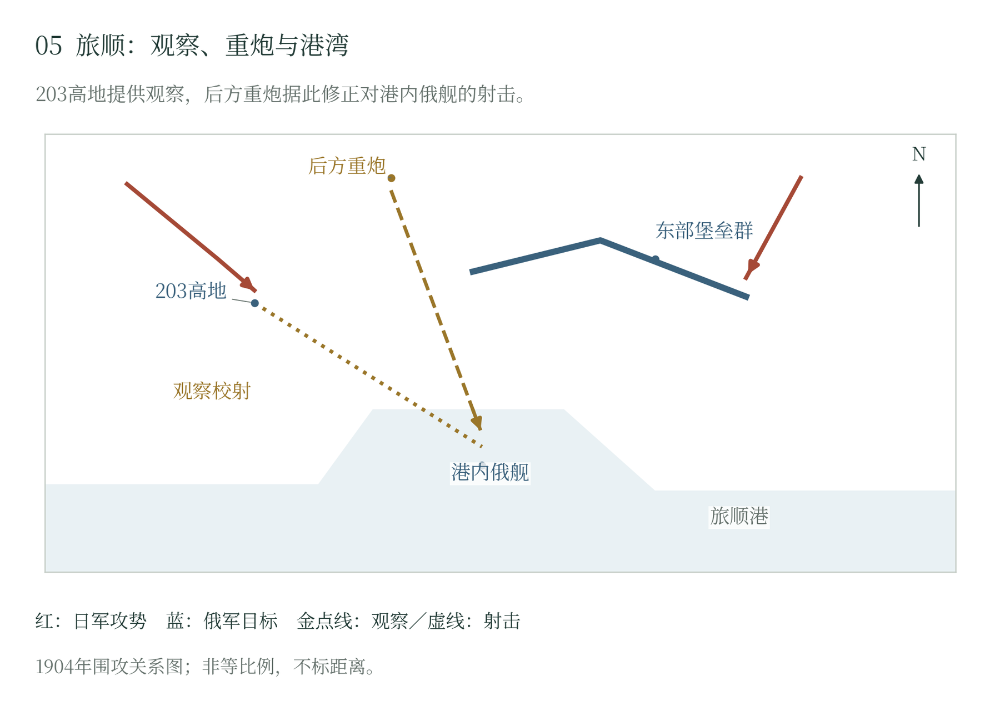

第四章 旅顺攻坚与海陆战场的交汇
一座要塞牵动两种战争
南山失守后，旅顺仍有陆上工事、岸炮和舰队，能够牵制日本大量兵力。攻取要塞可以消除辽东后方威胁，释放部队参加南满野战；消除港内俄舰，又关系到日本海军能否集中迎击欧洲增援。陆军围城与海军封锁因此围绕同一基地展开，各自还有需要优先解决的目标。〔1〕
乃木希典的第三军在五月以后逐步组织起来。第一、第十一师团先后投入，第九师团到七月下旬参加展开，第七师团则在十一月加入。这支围城军队是一批一批集齐的。后方同样忙于准备：大连港的障碍要清除，铁路和转运设施要修复，重炮及攻城物资才运得进来。第三军已经承担围城任务，所需兵力与器材仍在陆续增加。 〔2〕
旅顺的防御也在继续施工。东北正面的东鸡冠山、二龙山、松树山等堡垒互相支援，中间的壕沟、野战阵地和铁丝网填补空隙；西北的203高地属于另一组争夺空间。永久工事与临时增筑部分交错，守军要把现有材料、道路和通信纳入一个能够反击、修复和补给的体系。〔3〕
七月下旬至八月初，日军攻占外围高地，逐步接近主防线。八月九日，陆上炮弹已经击中港内舰船，迫使舰队面对停泊安全恶化的现实。翌日俄舰向海参崴突围，黄海交战后，一部分返港，另一些驶入中立港或继续单独航行。围城由此直接影响海军选择，而返港的重舰仍需要日军继续处理。〔4〕
总攻受挫以后
第三军第一次总攻从八月十九日延续到二十四日。日军希望以猛烈炮击和多路步兵攻击压垮防御，尽快腾出兵力。攻击在一些地段取得进展，二十二日夺取磐龙堡附近阵地，却难以把局部突破向纵深扩展。相邻堡垒继续射击，铁丝网和壕沟限制后续部队通过，进入突出部的步兵又受到侧射与反击。〔5〕
乃木急于突破要塞，八月总攻便把步兵推到了炮火尚未充分破坏的防线前。炮击时隐蔽的守军，在日军接近时重新进入阵地；铁丝网、壕沟和侧射火力，仍拦在冲锋者面前。夜色遮住了部分观察，也使辨路、联络和增援更加困难。第三军付出大量伤亡，完整的防御体系依然撑住了。急攻的希望落空以后，日军逐步加强接近壕、炮兵阵地和工兵作业，为下一次攻击准备较可靠的条件。 〔6〕
第三军的规模同样在变化。美国编纂史估计，投降时第三军有效兵力约七万五千人；八月总攻的到阵人数与全期累计投入另有范围。该编纂史又以传闻性表述记日军八月总攻死伤“超过一万五千”，这一数字的核验状态见附表。把兵力、到阵与伤亡分开，才能判断乃木的急攻究竟消耗了什么。
壕沟推进缩短了最后冲击时在开阔地暴露的距离，也使弹药、担架和后续部队更接近目标。守军则以出击、手榴弹、反向坑道和炮火阻碍施工。九月对203高地等处的攻击仍未取得持久突破，日军一边争夺前沿支点，一边把新的进攻起点向前移动。围城从短促决胜的尝试，转成持续改变地形和火力条件的工程作战。〔7〕
九月下旬以后，二十八厘米榴弹炮逐渐投入。重炮的曲射与爆炸威力加强了对掩蔽部、堡垒和港内舰船的威胁，守军则继续加深掩体、修补工事。十月二十六日至三十日的第二次总攻虽又推进部分阵地，仍未使要塞整体崩溃。重炮提供了更强的破坏手段，日军仍须让炮击、接近作业与步兵占领彼此衔接。〔8〕
围城中的组织消耗
围城使双方都要反复修复已被破坏的战场。守军的道路、电话线和材料运输支撑着炮弹补充、伤员搬运与局部增援，白昼暴露的地段往往依靠夜间工作。炮兵和工兵逐渐成为决定抵抗时间的关键力量；一处工事能否继续使用，还取决于人员能否到达、通信能否恢复。〔3〕
日本须不断跨海补充攻坚损失，把物资从大连运到前线。第三军留在旅顺一天，南满野战军便少一支可以调用的力量。俄方因此愿意继续守下去：要塞牵住日军，港内舰艇也还保留着再度出海的可能。双方统帅计算这些收益时，伤员、守城平民和当地劳动者承受的围困也在一天天延长。 〔6〕
城区与港区进入炮击范围以后，军民空间进一步重叠。医院、住宅和运输道路遭到威胁，伤病员需要的照护与守军急需的人员、物资争夺有限资源。八月日方提出撤出非战斗人员的安排，俄方未接受；随着围城延长，留在城内者的生活也受军事判断支配。〔9〕
1904年九月，与谢野晶子在《明星》发表写给从军弟弟的诗，呼唤道：“弟弟啊，我为你哭泣，你千万不要死去。”她又问：“旅顺城破也好，未破也好，又有什么关系？”（两处均为本书自译。）母亲的白发、新婚妻子的等待，在诗中紧接着战场上的弟弟。军部计算何时攻下要塞、何时北调一支军队，姐姐牵挂的是这个人还能否回家。诗把将领所称的胜利放回一个家庭，让养育、婚姻和日后的生活也有了发言的位置。〔10〕
203高地与堡垒防线的崩解
十一月二十六日，第三次总攻再次从东北正面展开，突破受阻后，日军于翌日把重点转向203高地。第一、第七师团等部反复冲击，守军争夺山顶不同部分并组织反击。山地的观察价值使双方持续投入，局部占领还须经受反击，直到十二月五日，日军才取得稳定控制。〔11〕
高地的价值在于改善对港内目标的观察和校射。日军此前已能炮击军港，此后更容易修正落点、连续打击停泊重舰。港内舰船在不同日期被击毁或失去作战能力；移至外锚地的“塞瓦斯托波尔”号则另受鱼雷攻击，最终由俄方处置。港内炮击、外海攻击和俄方自沉共同压缩了俄军剩余海上力量，也使东乡得以把主力准备转向下一支俄国舰队。〔12〕
203高地失守以后，陆上要塞仍在作战。十二月十五日，负责防御的重要将领康德拉坚科阵亡；十八日东鸡冠山北堡垒在坑道爆破和攻击后失守，月底二龙山、松树山等阵地相继丢失。接近壕、爆破和重炮逐一拆解相互支援的堡垒，原先能够交叉射击的阵地开始出现缺口，守军组织反击的空间随之缩小。 〔13〕
1905年1月1日，俄方提出投降交涉，2日在水师营签署受降安排。普通官兵进入战俘程序，部分军官可以依条件作出不再参战的承诺。特列季亚科夫后来仍主张若干阵地有能力继续抵抗，他的判断显示局部守备状况与整体投降决定之间存在分歧；斯捷塞尔等选择结束围城，则意味着以要塞和人员的交出换取停止战斗。〔14〕
旅顺陷落，日军终于可以抽出这支围城部队，东乡也得以准备迎击新的俄国舰队。第三军离开要塞以后，仍须补充、重编，再向北开进。把时间拨回此前的夏秋，辽阳、沙河的战斗早已在围城期间展开。南北两处战线一直相互牵制；旅顺迟迟未下，曾经怎样影响南满的选择，还要从这些会战中看清。

西北的203高地与东北堡垒群承担不同战场作用。日军逐步以壕沟、爆破和重炮推进，十二月五日取得高地后加强港内观察校射，随后继续攻取堡垒，至次年一月二日受降。 本页采用文字校订版。
随文简图 · 自然地理底图：Natural Earth；历史依据见本章注及大图5逐图来源。大图5（图册第5页）